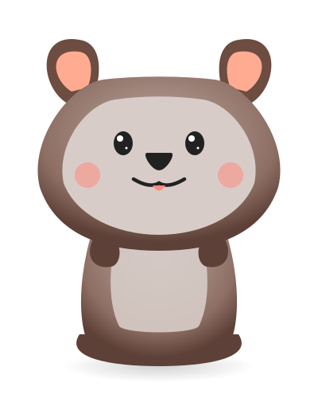

Ritual diario para un sueño reparador
Orden → Higiene + Skincare → Estiramientos → Meditación Shiné → Desconexión
Descripción
Esta rutina de 25 minutos prepara tu mente y cuerpo para un sueño reparador. Incluye meditación Shiné (budista) para calmar la mente antes de dormir.